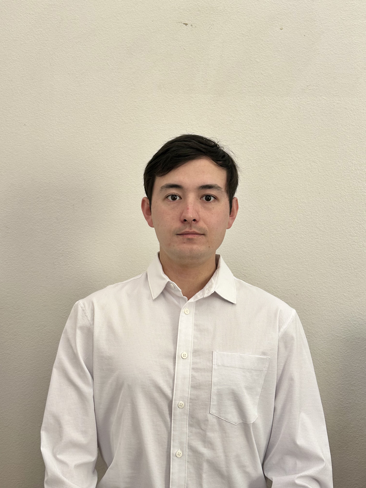

Joel Wissing
Aspiring Web Developer / Title
Socials
About
I am a Data Science undergraduate at the University of California, Riverside, with experience in customer service, academic tutoring, and respite care. I bring a unique mix of technical skills and compassionate support, with a strong passion for learning and helping others.
Work Experience
| Company |
Title |
Dates |
| 24 Hr Cares |
Respite Worker |
2023 – Present |
|
Provide compassionate care and support for disabled children and young adults. Assist with daily activities, behavior management, and social skill development while maintaining a safe and engaging environment.
|
| Norco College Tutoring Center |
Student Tutor |
2023 |
|
Tutored students in STEM subjects, emphasizing problem-solving, conceptual understanding, and independent learning. Created customized study plans to support individual academic needs.
|
Education
| Institution |
Degree |
Years |
| UC Riverside |
Bachelor of Science in Data Science, Bachelor of Art in Philosophy |
2024 – 2027 (expected) |
|
Currently pursuing core courses in data analysis, statistics, and programming. Studying to take the LSAT and apply to Law Schools.
|
| Norco College |
Associate Degree in Mathematics |
Graduated Spring 2023 |
|
Earned with coursework focused on calculus, algebra, and foundational statistics.
|
Coursework
- Intro to Data Science
- Calculus I & II
- Statistics for Data Analysis
- Python Programming
Skills
- Python, R, SQL
- Customer Service & Communication
- Special Needs Caregiving
- Tutoring & Academic Support
- Fluent in Japanese
Projects
- GlobalPowerElite.com – Founder and author of a blog exploring global mythology through critical and symbolic analysis.